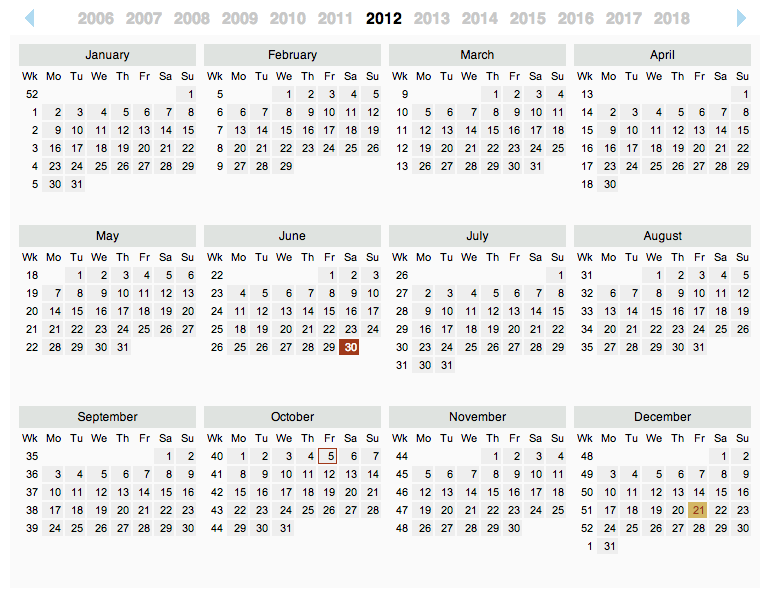
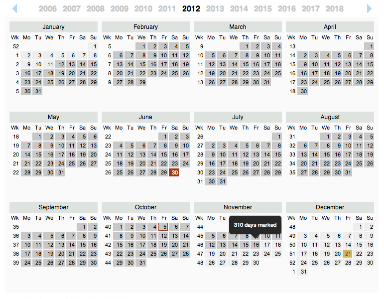
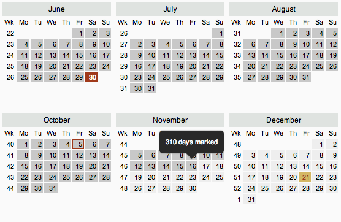

Calendar & Countdown
How to use:

- Click the extension icon in the Chrome extension menu to view the calendar.

- Hover over any date to show a popup with various information about the chosen date.

- Left click any date to set it as the countdown date, it will change color. This date is the main countdown date, and the one that will be counted down to in the menu bar.

- Right click a date to bring up the menu. Here, you can add notes to dates, change color, toggle countdowns and remove any settings for a date.

- Click a date and move the mouse to count the number of days between any two dates.